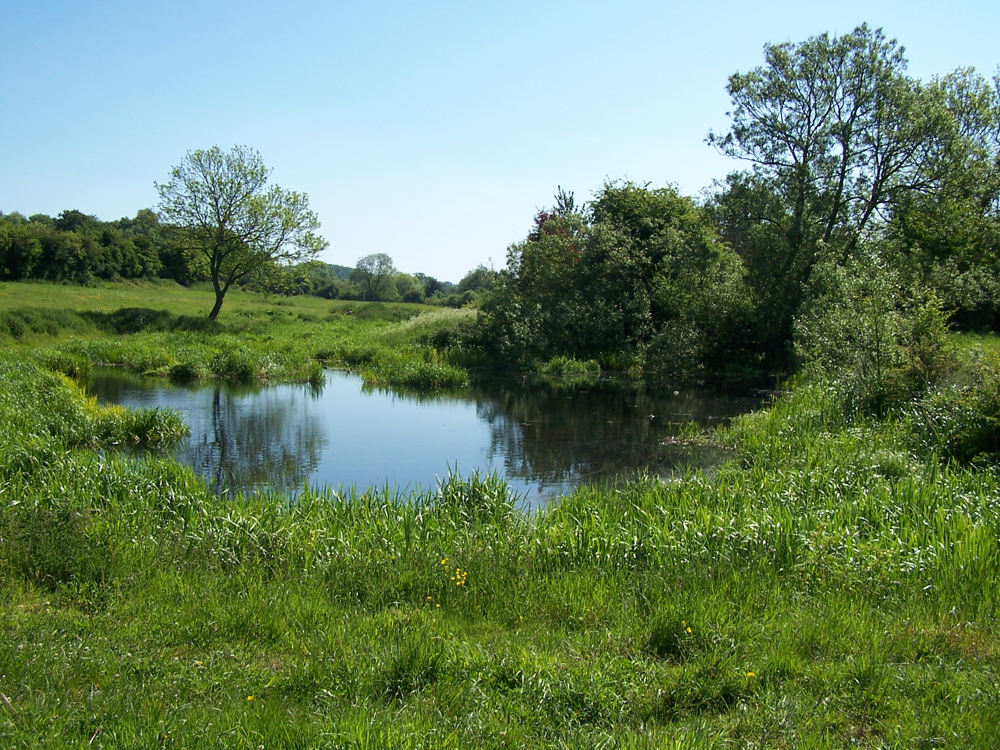
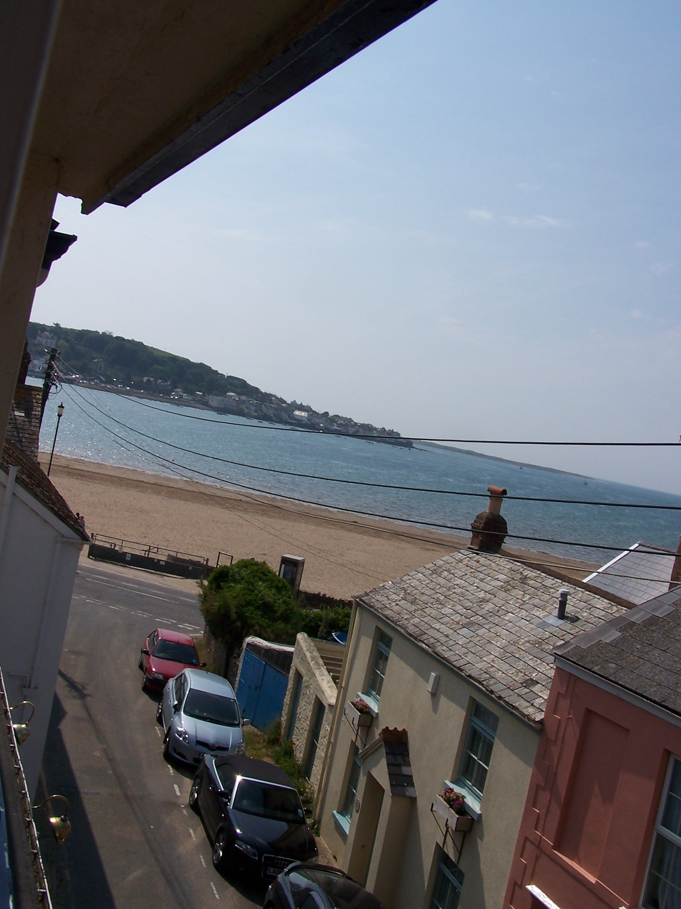

A Somerset Way from Bath to Barnstaple
Saturday 30th May Bath to Blagdon
Field and road walking some of which on the Limestone Link path
22 miles approx
An
early start today with a bit of off the map walking to begin with. Since
I ended up at the campsite last night I had decided that I wouldn't
bother walking
into Bath itself, that I would leave
that to another day. So this morning I would cut across eastward and
southward,
walking off my maps and see if I can eventually find the limestone link
path.
I was walking by 6:50am and heading out on minor roads hoping
that I would take the correct turns as I came across them. Luckily the
road I was on kept a generally South Easterly direction and about an
hour in to the day I noticed that I had crept onto the top of one of my
maps. I then followed a line of local and hardly trod field paths
directly south towards Timsbury. These paths were either ploughed out
or
overgrown enough to be difficult to get through wearing a pack. Just
outside Timsbury I sat down in a field and enjoyed the sun, waiting for
shops to open. Just inside the village I found a COOP and was able to
get some supplies. I looked for the Post Office, which showed on the
map,
but it was closed and there was no visible trace. I wanted to
post my map for the Cotswold way but it would have to wait.
Outside where
the post office would have been, I found an old track that would lead
me down to the Limestone Link path. The link path uses the route of an
old railway line and an older canal. The
canal having been mainly filled in with all being left are some pools
and swampy ground in places. This made for nice walking, with tracks,
field paths and some wooded areas. I came off the path at Clutton to
find that the Post Office, in this little village, was still there!!! I bought
stamps a pen and an envelope and posted my maps back home. I was sweating
cobbs by now with the day being really sunny and warm. The way out of
the village wasn't at all clear as the path disappears after the messy
yard of Chalwell farm. After a bit of walking about, beside some very lively bee hives, I guessed the way and found
that the path went through a field that had been ploughed and planted. I eventually
came out into grassy fields and sat in the sun having lunch whilst watching
people sat outside a pub about a mile down in the valley at the bottom of the hill in Camelay.
I
came to the road and decided to stay on it towards the little village of
Hinton Blewett where I rejoined the way just outside the village as it drops
very steeply down from another hill called Prospect Stile. I managed to break my
walking stick on the way down as I struggled in the muddy ground. It had been with me for many miles walking in this and other
countries and I wasn't at all happy. Walking now without the stick for support I
pressed on to West Harptree where I found the Post Office and
bought some more drinks. It was really hot and I was feeling it
and looking for shade. Following the way again on field paths towards
Compton Martin I found that the path had been erased where it would
have
gone through someones garden. I walked into the garden to have a
look but eventually had to drop
down to the road and then back up another road further on. The Green
Plantation must
be fairly new as the trees were all quite young and didn't offer much
shade. I eventually made it to Blagden which was downhill but on
the
wrong side of the hill. Its a nice little village with a cricket
green and a lake (reservoir) in the background. The Live and Let
Live Inn was on the far side of town. It was dead. I was the only
guest. The room was ok, a bit dated and the TV reception in the room
was non
existant. I had a really nice curry and pint of scrumpy then walked
into the village in the evening sun to get some supplies. It was so
warm that the store had its air conditioning on. I snoozed in my
room for a while than as it cooled down I watched a bit of crackly TV.
Sunday 31st May Blagdon to Glastonbury
Field, track and road walking using local paths and West Mendip Way
20 miles approx
I
was packed up and ready by 8am. I had a monster of a breakfast with
cereal, toast and jam, followed by a huge cooked breakfast. I was the only one
at breakfast, I think I was the only one in the
hotel. It was already hot outside and there was no wind today. I walked
out of
Blagdon following the road that I walked in on yesterday. This time it
was all up hill. At the top I
rejoined the Limestone Link for about a mile taking me up on to Black
Down. From here
I was on the West Mendip Way heading towards Cheddar Gorge. The sun was
hot but there was a slight breeze on this side of the hill. I
originally planned to walk on the road down through Cheddar Gorge but
it was too
busy with cars so I stayed on the Way heading up, very steeply up above
the gorge.
I left the way at the top and took a local path down to Cheddar
village. There were a
few opportunities to look down into the deep gorge and watch cars
heading up on the narrow road. I took some steps down called jacobs
ladder heading to the road. It was very busy and I had to stand
aside for
many people walking up. This was a bank holiday weekend so the crowds
were to be expected. Cheddar was packed out. I left following the
road and
decided to stay on it rather than follow the field paths. The top road
that I
followed was quiet and the high hedges and trees gave me plenty of much
appreciated shade. I eventually came to the main A road at Draycott. It wasn't that busy but
there was no footpath so I left not long after taking back roads at Rodney Stoke. A
local footpath that I was hoping to take was blocked by a locked gate
with keep out painted on it. I stayed on back roads to
Westbury-sub-Mendip. The Post Office here was open but changing hands and as
such had little to sell. I bought a few drinks cartons and an ice pop. From
here the footpath was easy enough to pickup and follow. I eventually
arrived at Yarley and followed a newly resurfaced minor road out to
Yarley Fields Nature Reserve. Here I found a path that was overgrown
but short enough for me to find the road. These are listed as droves,
and the roads are flanked by dykes running like small brooks. Godney
Drove brought me to Upper Godney then on to the outskirts of
Glastonbury. In blazing sun I arrived at the Isle of Avalon campsite.
Not cheep at £12 but the facilities were A1.
I pitched by a
hedge for shade and decided to take a walk into town. It was busy.
There were a few drunks gobbing off on the way in. Nice. Glastonbury
attracts interesting people! I walked on to and up Glastonbury Tor
which was also busy in the warm evening sun. I walked back and washed
everything in the Laundry. I'll be crossing the last motorway tomorrow
and heading west towards the coast at last. I sat outside the tent
in the cool evening air at 9pm.
Monday 1st June Glastonbury to Enmore
Track and road walking using local paths minor roads following the Samaritans Way
22 miles approx
The alarm sounded out at 5:30 and I was away an hour later. I had to take the main
road out of town towards Street. The sun was out and it was already
nice and warm. I also had no choice but to walk
through the main street of Street too, passing the Clarks shoe factory
outlet and all the closed high street shops. It was really warm by
8am
as I left the main A road and headed on to minor roads at Polton.
The
map promised a windmill to see out on Walton Hill but it was just a
pepper pot with no sails. I headed down a track to Little
Huckhall farm where I came to a gate with a sign warning of loose guard
dogs. This was a signed public footpath! I had no real choice but to go
on, but I opted for a stealth approach and climbed a gate into the
neighbouring
field rather than using the driveway. I progressed carefully listening
for
any signs of dogs. I reached the end of the field and climbed a
stile into the main yard of the farm. If I was going to be under
attack, this is where it would happen. Oh well I had to progress, so I
crept through opening at
least six noisy gates that were in my way. I continued through a maze
of
buildings and over a stile into the next field. No dogs. The sign would
work to warn off most day walkers. I was following a route that doesn't
show on the OS map
but is just about signed on the ground. Its listed as the Samaritans
Way Southwest.
This path needs some attention, I found myself hacking at overgrown
weeds and climbing over tied off farm gates, climbing over electric
fences, walking through loads of cow turd. This was all within the next
mile. I guess that the sign wasn't the only thing laid out to deter
walkers. The farms under the Polden Hills were not geared for walkers,
I
felt that I was either trespassing
or that I wouldn't be able to get through at all. I eventually made my
way back to the main A361 at Pedwell. After the adventures of last few miles I opted
to stay on the road for a while. It wasn't too busy with traffic so I was ok jumping
up on to the verges every so often. This was only for half a mile and
when I arrived at Greinston I rejoined the way as it became a track
over Pit Hill. This was a nice walk but
had only a couple of trees and offered not much shade in the now
blistering sun. From
Sutton Mallet I was walking, in the main, on waterway lined roads. I
stopped and sat in a field for 20 mins to cool off. Now I was heading
towards the biggest town since Lichfield. Bridgewater was to be one of
the biggest built up areas on my walk. Before it I walked through
the village of
Chedzoy, a nice place but like most villages now has no shops. I
crossed the motorway. The M5 is
the last motoway to cross on my walk. I was now heading into housing
estates. Wow,
this was wierd after all the open space. I was looking for a shop. The
first I
came to was a Somerfield on the main road in. I bought food and
drink and some hayfever tablets. I was now able to take a direct walk
through town, and managed to dodge the main shopping centre. On my way
out I passed
tower blocks and large housing estates on my way to rejoin the
Samaritans Way. I found a pathway near some allotments and was
soon walking on field paths again. The built up area was soon
disappearing behind me. From Rhode
Lane the path wasn't at all clear, in fact it had been ploughed out. I
walked
around the edge of the field and managed to get to the little village
of
Goathurst. I sat on a stile and cooled off out of the sun using the
shade of some old oak trees. Now it
was a matter of following the small lanes past the Temple of Harmony (a
greek like building on the hillside) to Enmore. I was early and found
the Tynte Arms Inn closed. I asked a guy who was sat in the house
behind and he
told me that the landlord lived a few houses along. I knocked and was
shown to my room. It was a really nice room in a new wing of the pub. I
had a shower and
a rest before heading in to the pub for dinner. I had Cumberland
sausage,
potato and veg and there was loads of it too. I was stuffed. After two
pints of cider and a talk with the landlord about my walk. I was off
the my
room. I waited to watch a time team special but fell asleep. No way. I
missed Time Team. This was the low point of the walk so far. The heat
of
the day had zapped me and the forecast promised at least two more days
of
this heatwave.
Tuesday 2nd June Enmore to Minehead
Hill and Tracks over the Quantock Hills to the coast following the Macmillan Way West
24 miles approx
I've
been walking for eight weeks now. It has been a great adventure. I was still
very tired this morning and I think the sun was taking its toll on me. Like the
meal last night, the breakfast was really nice
and lots of it too. The landlord wished me luck and I was on my way by
8:45am, following the road towards the Quantock Hills. The little
road was really busy as there was a school just up the road and
everyone was driving the kids in. Lazy bunch. I progressed carefully to
manor farm where a
minor road folowed by a muddy bridal way, took me off the road as far
as
Twenty Acre Plantation. Then I was back on the road for a short
distance to join the
Macmillan Way west path and on to a small car park at Lydeard Hill. The
car park was quiet. Looking back I could still see Glastonbury Tor on
the horizon. It a days walk back now. The sky was clear blue, the
sun was
hot, but on the more exposed hillside there was a welcome breeze. These
are nice hills and welcome after all the field walking I've been doing
across Somerset so far. These hills remided me of the great walking
back in the Cheviots and Southern Scotland. To my right looking out and
down I could see the coast on the wide Severn estury and across to
Wales. To the left there were miles of the rolling hills of Exmoor and
ahead to
Minehead on the coast. I could just make out the Wellington
Monument which sits above Taunton by the M5 motorway heading south to
Exeter.
After a mile of open track
I came to an ancient drovers road running on Great Hill. For most of
its length this wide track is lined on both sides with old weathered
beech trees. These gave great shade and were really welcome. Not
far along this a group of kids came cycling up behind me with a couple of
adults in tow. They were puffing and panting and complaining to
each other. I
passed them a little further up as they were asking the adults how far there was to go. I
managed to escape them as they didn't follow me up Black Hill.
From here I was following the track again but only one side was
tree lined. There are a lot of tracks up here and I could imagine it
being very popular at weekends. I dropped steeply down following a
track to the little village of Bicknoller. Here the Macmillan Way path
is at last waymarked. I followed it across the railway line and on to Williton.
As I walked the path into town I could hear a steam train chugging and
whistling along the track I'd just crossed earlier but I couldn't see it
though. Williton was busy with lots of traffic. I bought some supplies
from the shop before heading out on the now difficult to follow and
poorly waymarked path. After walking around an old mill, now
cafe, I came to an old pack horse bridge, marked as weirs on the map. I
wonder what it was
once.
After Lower Stream and Stream, which were just a house or two, the path
followed the river and was totally overgrown. I came back to a road and
lost my way from here looking for Higher Stream. I ended up at the road
at Yarde and had to walk the road to Torre to get back on track. Here I
left the way to head down to the coast. I walked the road to washford
and up a steep old road over to Old Cleeve and Chapel Cleeve. Only a
short distance later I was at the coast. This was the first time I'd
been at the coast since John O'Groats. The tide was in as I walked
along the modern promenade to Home Farm campsite at Blue Anchor.
When I arrived I found that it was a members only site. I asked the
owner if they could make the exception given that I'd walked
and was doing the end to end. No. She told me that it was only a couple
of miles back along the coast to another site. I'd seen a lot of cows on this walk but she was the biggest Cow. If you read this
remember that not everyone recognises real effort and so I ask that you
don't stay at this site, I'd p**s on it instead. I now faced a further walk back away
from Minehead. This was an uphill stomp along a fairly busy road.
I eventually arrived at Warren farm campsite at 4pm. I pitched in
between some caravans and had a shower. There are no other facilities
on this site. It was starting to cool off and my clothes were drying in
the evening sun on my makeshift clothes line. There was only a smidgen of phone signal at
the top of the site near the road. I walked up and called Lorriane and made plans for
the next few nights. Looking out for more members only sites.
Wednesday 3rd June Minehead to Westermill Farm Campsite (Exmoor)
Hill paths over Exmoor on the Macmillan Way West
18 miles approx
The
tent was bone dry this morning as the sun was up early and I was in
full sight of it in the middle of the field. I walked back along the road
towards Blue An chor and along the front passing
the site that refused me yesterday. They were lucky that I'd used the
toilet already this morning. I continued on along the stoney beach as far as a stile
which allowed me to cross the railway line and onto a field path towards
Carhampton. The sun was already hot and begining to burn. The road
through the village was already busy with traffic as people headed to work. I called in at the Post Office
for drinks and some chocolate peanuts then made my way along a little
lane towards Dunster Deer Park. A path though the park allowed me to cut through
to the small village of Dunster. This was a really nice little village
with thatched roofed
old cottages. The paths out of the village
were all well signed and colour coded. Handy. I followed the Macmillan
Way
West path through some allotments and then steeply up on to
Grabbist Hill above the houses. A wide bridalway on top followed
the wide
open ridge of Wootton Common. Some of the path was in the open with the
sun
baking down but some followed through old broadleaf woods offering cool
shade. An old rocky and often very steep bridalway dropped down
to Wootton Courtenay. I found that the local Post Office was still
there and open so I stopped in and bought more drinks.
This felt like this would be the hottest day of the walk so far. It was
steaming hot. I stood outside the PO I was looking up a the climb onto
Exmoor ahead. The first hill was heather and braken covered with a clear and
well walked path cutting directly up its middle. It looked like hard and
hot work. From the village I found a field path that took me through a field
with Archers shooting targets, then on to what was clearly a little
landing strip. It was the right path, I think! Now I was at the foot of
a continuous and fairly steep, but very open climb. I pushed on and up.
The path was rocky and I was the only person about. I was sweating
buckets. As I crested the brow of the hill some forty minutes later I
saw something glinting brightly in the sun ahead. As I drew closer it
became evident why there was noone about on this path. It was a bunch
of cars, parked in a car park!!! You can drive up. The path from the
carpark, on a narrow single track road, was a little busier. I walked on towards a large
cairn on the top of Dunkery Beacon. This cairn was erected by the
National Trust to commemorate its beggining in the sixties. This was the
highest point on Exmore. That was welcome news. I sat down for half an
hour and watched fighter planes come shooting across overhead. Once or twice
it seemed that they were setting up for a straffing run with me as a
target. The sun
was cooking me, and by now I was really well done. A cool breeze helped
a little. Continuing to Porlock Post, where the track ends at another
single track road, there was no sign of how to continue.
chor and along the front passing
the site that refused me yesterday. They were lucky that I'd used the
toilet already this morning. I continued on along the stoney beach as far as a stile
which allowed me to cross the railway line and onto a field path towards
Carhampton. The sun was already hot and begining to burn. The road
through the village was already busy with traffic as people headed to work. I called in at the Post Office
for drinks and some chocolate peanuts then made my way along a little
lane towards Dunster Deer Park. A path though the park allowed me to cut through
to the small village of Dunster. This was a really nice little village
with thatched roofed
old cottages. The paths out of the village
were all well signed and colour coded. Handy. I followed the Macmillan
Way
West path through some allotments and then steeply up on to
Grabbist Hill above the houses. A wide bridalway on top followed
the wide
open ridge of Wootton Common. Some of the path was in the open with the
sun
baking down but some followed through old broadleaf woods offering cool
shade. An old rocky and often very steep bridalway dropped down
to Wootton Courtenay. I found that the local Post Office was still
there and open so I stopped in and bought more drinks.
This felt like this would be the hottest day of the walk so far. It was
steaming hot. I stood outside the PO I was looking up a the climb onto
Exmoor ahead. The first hill was heather and braken covered with a clear and
well walked path cutting directly up its middle. It looked like hard and
hot work. From the village I found a field path that took me through a field
with Archers shooting targets, then on to what was clearly a little
landing strip. It was the right path, I think! Now I was at the foot of
a continuous and fairly steep, but very open climb. I pushed on and up.
The path was rocky and I was the only person about. I was sweating
buckets. As I crested the brow of the hill some forty minutes later I
saw something glinting brightly in the sun ahead. As I drew closer it
became evident why there was noone about on this path. It was a bunch
of cars, parked in a car park!!! You can drive up. The path from the
carpark, on a narrow single track road, was a little busier. I walked on towards a large
cairn on the top of Dunkery Beacon. This cairn was erected by the
National Trust to commemorate its beggining in the sixties. This was the
highest point on Exmore. That was welcome news. I sat down for half an
hour and watched fighter planes come shooting across overhead. Once or twice
it seemed that they were setting up for a straffing run with me as a
target. The sun
was cooking me, and by now I was really well done. A cool breeze helped
a little. Continuing to Porlock Post, where the track ends at another
single track road, there was no sign of how to continue.
No waysigns,
no path, not even a sheep trail through the deep bracken. Hmmm. Nothing
for it I strode on
into the heather. On a clear sunny day this was no big thing, but on a
rain soaked, misty and cold day -the kind of thing Exmoor is known for,
I
would have been reluctant to do this. Crunching through the heather and
bracken for a mile or so I eventually arrived at another road
and Aldermans Barrow. An old long barrow that had long since been
damaged and its treasures plundered. At this point I followed the road
down, passing a couple of women sat on deckchairs. They asked if I
needed water, and if I'd seen any groups out on the hills. I didn't and
hadn't. The group were Duke of Edinburghs Award people doing their
Gold. The women were marshalls. I pressed on down the road. I was
nearly knocked off my feet when two chinnoke helecopters shot accross
the road just above the hedge line. Yikes. It was
steep
down and I knew that it would be steep back up tomorow. I arrived at
Westermill Farm campsite. The owner was impressed with my walk. I
pitched in the first field. The only others there were an old couple in
a
camper van. After a cold (heated by the sun - so why was it cold today)
shower, I fould the laundry and set my clothes off before sitting out
in the evening sun. A large group of blokes arrived. These were the
DofE group. They pitched a few fields away. I headed to the shop and
bought a few bits. The lady was refusing to serve food or drink to the
DofE buch saying that the Gold Award meant that they had to survive on
what they were carrying. Nice. I walked back along the road and up for
a
half mile to get some signal on the phone to call home and book a
B&B for tomorrow. When I returned I found that a turkish lorry
driver had jammed his articulated lorry in the farm yard after taking a
wrong turn. I returned to the tent and chilled. The wind picked up in
the night but it was warm and there was no rain and none forecast until
the weekend
at least.
Thursday 4th June Westermill Farm Campsite on Exmoor to West Buckland
Hill paths over Exmoor on the Macmillan Way West
22 miles approx
I
was up
early in the morning with the cows in the opposite field mooing madly
as it got light. They were mooing until dark last night and then
started again just after 4am
as the sun ca me up. Hmmm they should
be burgers by now. I had a very COLD eco shower and got away after 7am.
The
day began with the climb back up the road that I dropped down on
last
night. There was a difference in the weather today. It was cool and
grey so I had a fleece jacket on for the first time since
Scotland.
Even the wet and windy weather on the Pennines was warm. The 10%
gradient climb warmed things up a bit though. I was soon striking off
on my way along an old bridalway across the moors. I found a finger
post lying on
the ground and replanted it. The signs around here, where there are
any, were old and a bit rotten. The grey sky decided to drop down and
Exmore was more like the moorland environment that I'd
expected. As I approached Warren Farm
I noticed a Police Helecopter circling above. It came over towards me
and then moved away again. As I passed the farm, before crossing the
River Exe, a
police car pulled up along side me and a woman police officer asked if
I'd
seen anyone suspicious. I told her I'd seen noone at all. She asked me
to keep my eyes open for someone who had robbed a car and once caught,
escaped on foot into the moors. I asked what they expected me to do if
I saw someone. She replied 'Call It In'. I think she'd watched too
much of The Bill.
me up. Hmmm they should
be burgers by now. I had a very COLD eco shower and got away after 7am.
The
day began with the climb back up the road that I dropped down on
last
night. There was a difference in the weather today. It was cool and
grey so I had a fleece jacket on for the first time since
Scotland.
Even the wet and windy weather on the Pennines was warm. The 10%
gradient climb warmed things up a bit though. I was soon striking off
on my way along an old bridalway across the moors. I found a finger
post lying on
the ground and replanted it. The signs around here, where there are
any, were old and a bit rotten. The grey sky decided to drop down and
Exmore was more like the moorland environment that I'd
expected. As I approached Warren Farm
I noticed a Police Helecopter circling above. It came over towards me
and then moved away again. As I passed the farm, before crossing the
River Exe, a
police car pulled up along side me and a woman police officer asked if
I'd
seen anyone suspicious. I told her I'd seen noone at all. She asked me
to keep my eyes open for someone who had robbed a car and once caught,
escaped on foot into the moors. I asked what they expected me to do if
I saw someone. She replied 'Call It In'. I think she'd watched too
much of The Bill.
I pressed on steep uphill along a narrow path. I guessed that
the crim wouldn't have taken this route being a tough climb. As I reached the top, the
helecopter came over and hovered over me. I guessed that they throught that they
had me. I walked on and again the helecopter came back and buzzed me. I
guess the pilot has the memory of a goldfish. I passed
an old stone hut but didn't investigate. A mile on I came to a little
road with a police car parked in a layby. The occupants sat nice and
warm watching the scene for any one suspicious. What happened to the
old bobbies who would be seen walking down the valley in a line
checking with every step. They are all a bit nesh
now. A group of young army lads passed me, each carrying
heavy packs. There is a lot of military activity in the area. The next
section of the walk up to Exe Head was across very bleak and
open moorland. This is the source of the river Exe leading its way all
the way
past Exeter to Exemouth on the south coast. A couple of miles on I
dropped down to Goat Hill, on to the road and back up on the other
side to Black Hill. Along a small road at the top are some strange
sculptured benched that are set out along its length. I sat on one near a couple of
Tumuli (burial mounds) for a spell before the walk down and out of the hills across
Whitefield Down. The grass was very long in most of the fields, and the path not visible so I
had to strike out in a direction taken fom the map. This worked ok and I soon
came to a little road near Brayford. I had to cut through Lower Holt
farm yard now where at least six snarling, barking dogs came at me. The
most nasty of them came running up growling
and barking, showing its teeth. I was tired and couldn't be bothered so simply smaked its nose with my map
and it recoiled in surprise. The others continued to bark but stayed
back. I was lucky really. I think that not
running is the Key. I crossed a small bridge and
continued along the Macmillan Way which is now also the called the
Tarka
Trail. It headed through a forest plantation before it follows a
short and very steep section of road that had been resurfaced and was
very sticky. I was soon back on paths and tracks though and the
sun was coming out and it was getting really hot again. It was
only a short road
section of about two miles before I reached the driveway of my B&B
at Huxtable Farm. Before I headed in I walked a mile and a bit
further on to the town to see if I could find the Post Office. I'd
called Lorraine earlier and she had called the West Buckland Post
Office to find it was still open. It was even stranger then that
it had been
closed for over a year according to a local guy. I had to walk back
empty
handed however I was lucky that the owners of the Huxtable Farm,
Jackie and
Anthony were very nice and offered me a cream tea on my arrival.
Whilst I was looking at
postcards from previous end to enders who had stayed here, Jackie also
made me
some butties. The room was in a very old part of the farm. It is listed
as an old Iron
Age Long House. The floors, walls and ceiling were up and down all
over the place.
The place was quite busy by the evening. I walked
back along the drive to call home as I had no signal back at
the farm. One of the Collie dogs followed me and stayed with me while I
walked. It thought I was taking it for a walk. The sun was still warm as I
watched it setting in the orange sky over West Buckland. I watched a bit of TV and
went to bed.
Friday 5th June West Buckland to Instow
Hill paths, roads and tracks on the Macmillan Way West and the Southwest Coast Path
20 miles approx
I was up
early and trying to run a bath quietly as the old house was full up and
deathly quiet. I was down for a full breakfast at 8am. Jackie was
asking about my end to end bike ride back
in 2007. Her daughters boyfriend had completed the ride in just a week.
I paid up and headed off. I promised to send her a postcard to add to
the collection. The first mile and a half took me back to West
Buckland. The sun was out already and it was getting warm. I followed
the Tarka Trail for some time then took a shortcut at Sandick Cross
following the road directly down to Landkey Newland. Here I bought a few
bits from the Post Office. The shop keeper asked about my walk and was
impressed.
I rejoined the Tarka Trail again as it lead out of town
heading across fields to Bishops Tawton. From here I was walking along
a busy road then a cycleway along the bank of the river into
Barnstaple. It was a bit of a shock seeing all these people. I decided
to head into the high street to get some money and buy some supplies.
It was heaving. I made my escape as quickly as possible and moved onto my last
map, the Southwest Coast Path. There was now only about two hundred miles to Lands
End.
Before
long I was heading along a tarmac cycleway on its way out of town. It followed an old railway
line that was now fairly busy  with cyclists and walkers. About a mile
along the path I caught up to a guy walking with two poles. One was a
gandalf style wooden staff. He was walking a little bit
slower than me. I slowed down and we got talking. Tom Scratchley
was walking around the
coast of mainland UK in three stages over three years and this was
his last year. He was walking from April to August where he was
finishing near the River Thames. He then intended to walk home to
Sussex. He
was expecting a big welcome from people in his local village. I hope
that he has made it. I'm certain that he did. We walked a
further five miles together to
where I was staying at Instow. My hotel was nice with views out to sea.
Yes sea, I was now essentially on the coast. The coast that would be
with me to the finish line.
with cyclists and walkers. About a mile
along the path I caught up to a guy walking with two poles. One was a
gandalf style wooden staff. He was walking a little bit
slower than me. I slowed down and we got talking. Tom Scratchley
was walking around the
coast of mainland UK in three stages over three years and this was
his last year. He was walking from April to August where he was
finishing near the River Thames. He then intended to walk home to
Sussex. He
was expecting a big welcome from people in his local village. I hope
that he has made it. I'm certain that he did. We walked a
further five miles together to
where I was staying at Instow. My hotel was nice with views out to sea.
Yes sea, I was now essentially on the coast. The coast that would be
with me to the finish line.
The hotel was having a loud
function that went on late into the night. I didn't care much I was
very tired. Rain was forecast for tomorrow. Hmmm. However coastal walking, seaside views and blue sea and skys. I was just looking forward to it.